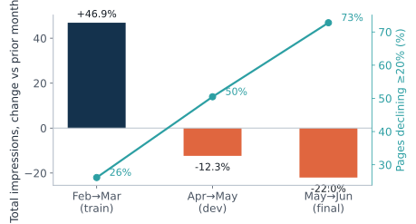
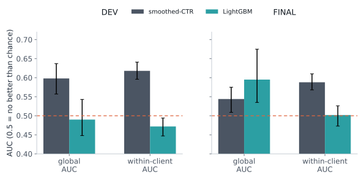
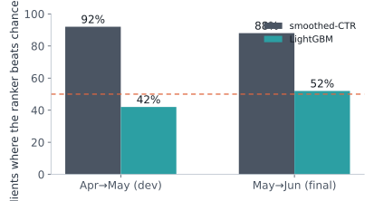
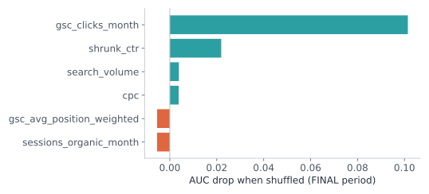
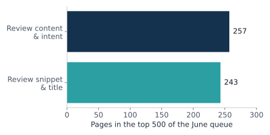

Abstract
A content team can only manually review a small slice of its pages each month, so something has to decide which ones come first. This paper builds and tests a ranking for that decision, using the FlyRank Search Intelligence warehouse: monthly organic-search performance for tens of thousands of pages across dozens of client accounts.
Six forward-looking features — average position, clicks, organic sessions, search volume, CPC, and a shrinkage-smoothed click-through rate — feed four supervised models (logistic regression, random forest, XGBoost, LightGBM), each compared against a one-line rule: rank pages by smoothed click-through rate. Every comparison is out-of-time, trained on one month and evaluated on later, unseen months, and checked two ways — across the whole dataset at once, and inside each client's own page set, which is the level an editor actually works at.
The simple rule wins the level that matters. Judged across the whole dataset, the best model looks competitive with, or ahead of, the rule. Judged inside a client's own pages, the rule ranks better than chance in roughly nine of every ten accounts, while every fitted model sits at essentially a coin flip. The apparent model advantage traces to raw click volume acting as a stand-in for account size — telling large accounts from small ones, not declining pages from stable ones.
The share of pages meeting our decline threshold nearly tripled across the three evaluation windows (26% to 73%), so every number here is reported as directional and decision-support, not as a stable forecast.
The deliverable is the transparent rule itself, a capped monthly review queue built from it, and the full validation trail — including the negative results — so "simple rule over complex model" is a checkable finding, not an assertion.
Introduction
The decision this supports. Once a month, an editor works down a list of pages and decides which ones earn a closer look — a title and snippet pass, a content rewrite, or just a note to keep watching. The list has to come from somewhere. Left implicit, that "somewhere" is whoever happens to notice a page sliding, or a top-line traffic chart that a few large, resilient accounts can hide from view entirely.
This paper makes that list explicit: a score, one row per page, ranking which existing pages are most worth a look because their organic search impressions are heading down.
What a wrong call costs. A page flagged that wasn't really declining costs an editor's time. A declining page that never gets flagged goes unreviewed for another month.
What this is not. Nothing here claims to know why a page declines, or how Google ranks anything. The features are observable signals about a page's own recent history — not causal levers, and not evidence about search-engine mechanics. Reviewing a flagged page is worth trying and tracking; it is not a tested treatment.
Data
This work uses the FlyRank ML Internship warehouse (Hugging Face, gated release): fact_content_daily_performance (daily rows, monthly partitions, February through June 2026) and dim_content (search_volume, cpc).
Every evaluation compares a decision month — when the score would be produced — against the following outcome month, so features never see the future they're meant to flag.
| Period | Features from | Label from | Pages | Clients | Role |
|---|---|---|---|---|---|
| Train | Feb 2026 | Mar 2026 | 145,066 | 41 | fit models |
| Dev | Apr 2026 | May 2026 | 194,663 | 49 | design & compare |
| Final | May 2026 | Jun 2026 | 237,505 | 55 | report |
| Score | Jun 2026 | — (unknown) | 202,386 | 52 | live queue |
Excluded, and why
- Deleted content (
is_deleted) — nothing to decide about. - Pages with zero impressions in the decision month — no baseline to measure a decline against.
- Pages missing an outcome-month row — the outcome is unobserved, so the row is dropped rather than filled in. This removed 3.7% of otherwise-visible Train pages, and 0% in Dev and Final; whether those dropped pages genuinely vanished or just have a tracking gap is unknown.
- Anything that defines the label — outcome-month impressions and any trend field derived from them are never used as features (see the negative-control check in Methodology). Pseudonymous account and content IDs are used only for grouping and joins.
Public-safe. No client names, domains, URLs, or search queries appear anywhere in this paper or its source notebook. Client identifiers are relabeled "Client 1…n" in publication order; only aggregate statistics leave the analysis.
Methodology
Label. A page is declining if its outcome-month impressions are at least 20% below its decision-month impressions. A page that falls to zero counts as declining. This is a defined threshold, not a measured harm, and is reported as such throughout.
Features (6). Impression-weighted average position, monthly clicks, monthly organic sessions, search volume, CPC, and smoothed click-through rate. Missing values are filled with medians learned from Train only.
Smoothed CTR, plainly. Raw click-through rate is unreliable for low-impression pages — zero clicks out of ten impressions looks identical to zero out of ten thousand. Smoothing pulls each page's CTR toward the dataset-wide average in proportion to how little data it has (equivalent to 50 pseudo-impressions at the reference rate, fit on Train only: 0.33%).
Baseline. Rank pages by smoothed CTR, lowest first. No fitting — fully transparent and auditable by hand.
Models. Logistic regression (scaled), random forest, XGBoost, and LightGBM, all fit on Train only. LightGBM was named the primary model to report against the baseline based on its Dev-period result, before Final was examined — that label is not revisited after seeing Final's numbers, even where another model scores higher there.
Validation design
- Time-aware: every model is fit on Train (Feb→Mar) and evaluated on two disjoint, later windows it never saw.
- Client-aware: pages from one account move together, so all uncertainty intervals come from resampling whole clients, never individual pages.
- Within-client view: the question that actually matters — does a score order pages correctly inside one account — is reported separately from the whole-dataset (global) view, which mixes in differences between accounts.
Final is not a blind test. The May→June window was inspected during interactive development — including the diagnostic that led to redesigning the baseline — before this notebook was consolidated. No further modeling choice was tuned on it afterward, but it should not be read as a held-out test in the strict sense.
Leakage control
A negative control makes the exclusion rule concrete: adding the label's own source columns (outcome-month impressions, decision-month impressions) back in as features pushes 5-fold cross-validated AUC on Train from 0.615 to 0.960 — confirming why they are never used as inputs, only to construct the label.
Results
The ground shifted under every comparison: total impressions grew 47% from Feb to Mar, then fell 12% and 22% in the two following windows, and the share of pages meeting the decline threshold rose in step.

Global view vs. the view that matters
Scored across the whole dataset, LightGBM's Final-period AUC looks ahead of the baseline (0.60 vs. 0.54). But its 95% interval, estimated by resampling whole clients, is wide enough to fully contain the baseline's — this is not a resolved difference. Inside a client's own pages, the picture is not just uncertain, it flips: the baseline holds up (0.62 in Dev, 0.59 in Final) while LightGBM sits at 0.47 and 0.50 — statistically indistinguishable from a coin flip in both periods.


Why the global number is misleading
Permutation importance on the Final period shows LightGBM leans almost entirely on raw monthly clicks — shuffling that one column costs far more accuracy (−0.101 AUC) than shuffling smoothed CTR (−0.022), the feature the baseline is built from entirely. Position, sessions, search volume, and CPC contribute close to nothing on their own.

Raw click counts scale with how large an account is. A model that leans on them can partly separate large accounts from small ones — a real signal at the whole-dataset level — without doing a better job of ranking pages inside any one account. That is exactly the gap between Figure 2's global and within-client bars.
Robustness
Two sensitivity checks were run on both Dev and Final: removing clients where at least half the pages fell to zero impressions, and removing the single client each ranker's own top-50 leaned on hardest. The baseline's within-client advantage survives both cuts; LightGBM's global-level result moves around under the same cuts, consistent with an account-composition effect rather than a stable page-level signal. The baseline also holds up similarly whether a page sits on page one or beyond it; LightGBM is weakest specifically for page-two-plus pages (AUC 0.44 in Dev) — the exact group the content-and-intent review below is aimed at.
Limitations & honest framing
- The base rate is not stable. The share of declining pages nearly tripled across three windows (26% → 50% → 73%). Every metric here is reported as directional, not as a fixed operating point.
- A page dropping to zero counts as declining, and a small number of accounts had most of their pages hit zero in the Final window. This may reflect tracking or integration changes rather than page performance — the data cannot distinguish the two.
- The signal is modest. Even the winning within-client AUC (0.59–0.62) is well short of a strong classifier. This is a ranking aid, not a confident predictor.
dim_contentis a single snapshot — search volume and CPC are not dated to a specific month.- Final was not a strictly blind test (see Methodology); the reported numbers should be read with that in mind.
- No causal claim. Nothing here shows that reviewing a flagged page changes its trajectory, and nothing here says anything about how Google ranks pages. Suggested reviews are hypotheses to try and track, not tested treatments.
Ranked recommendations
Engine. The smoothed-CTR rule — the only ranker with a repeatable within-client signal. Pages are ranked inside each client, lowest smoothed CTR first, since that is the level the evidence actually supports.
Process. Score the newest complete month once a month (June 2026 here: 202,386 pages, 52 clients). Work down a combined list built round-robin across clients — every account's #1 first, then every account's #2 — so no single account fills the queue.

Reason codes describe the page's state — they are not proven causes
ctr_low_in_client— smoothed CTR is in the bottom 10% of that client's own pages.position_page_2_plus— average position is worse than 10.
Suggested review (a hypothesis to test, not a result)
- Page-one position, low CTR →
review_snippet_and_title. - Position worse than 10 →
review_content_and_intent. - No position data available →
monitor.
A non-consecutive sample from the top of one monthly queue, chosen to show both reason-code combinations (client labels only, no page identifiers):
The score is a ranking, not a calibrated probability, and the underlying signal is modest — treat the queue as a prioritized starting point, not a verdict.
Reproducibility
Every number in this paper comes from a single notebook, run top to bottom, with the config, seeds, and period definitions fixed in one place at the top.
- Notebook:
work/notebooks/capstone.ipynb - Repository: github.com/Bigoal/flyrank-ml-internship
- Seed: 42 · Decline threshold: −20% · CTR smoothing: k=50
- Environment: Python 3.13, pandas 2.2.3, numpy 2.1.3, scikit-learn 1.6.1, LightGBM 4.6.0, DuckDB 1.3.2
Acknowledgments & data credit
Built on the FlyRank ML Internship dataset — flyrank.ai. Thanks to the FlyRank AI ML internship program for the dataset access and the lane structure this work is built on.